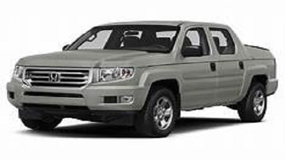

What started as a vision; the opening of Murphy's Auto was a dream come true for a young man named James "Murphy" O'Neil. As a young boy Murphy watched as his father worked tirelessly at the neighborhood auto dealership to support his family which included eight children. He dreamed of one day opening his own dealership so his father could retire and he could take care of the family. The neighborhood dealership fell on hard times and his Father was laid off. Once he finished college; Murphy got together with a couple of friends and bought the dealership. Opened in 1959; Murphy's Auto has continued the legacy of a friendly neighborhood dealership. Murphy's Auto prides itself with honest, fair automobile sales and continually helps with contributions to his community.